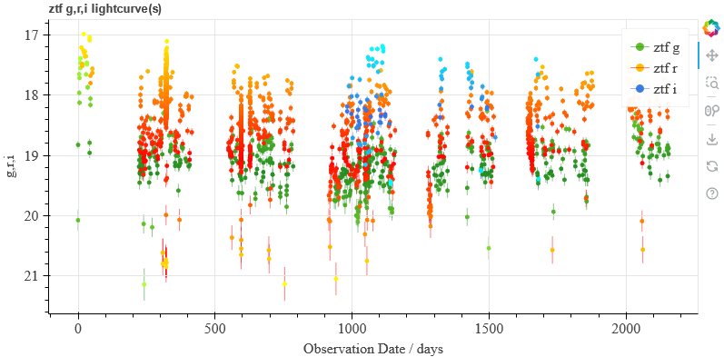
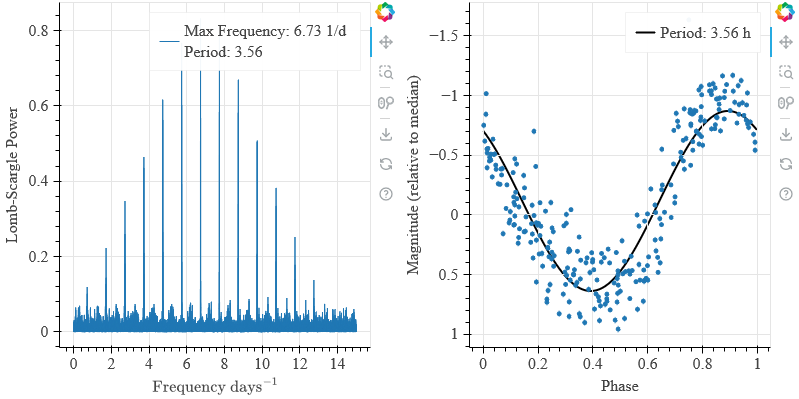
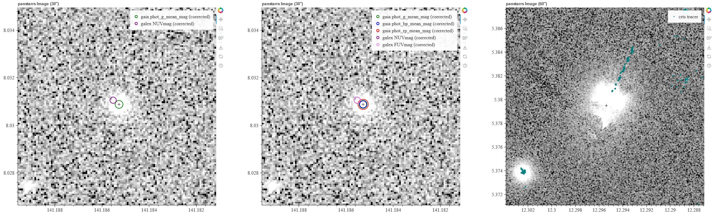
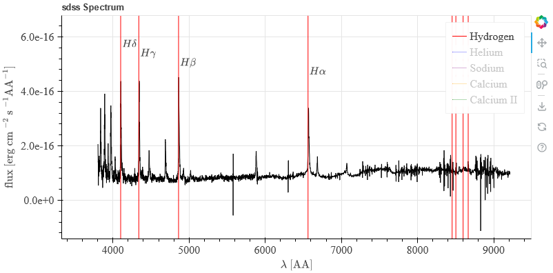
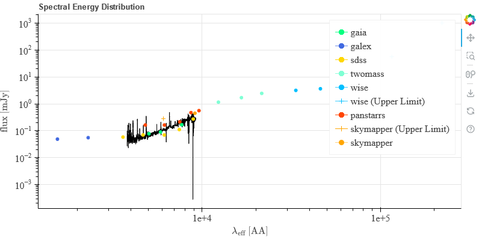
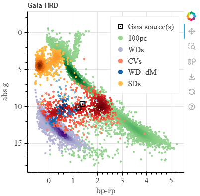
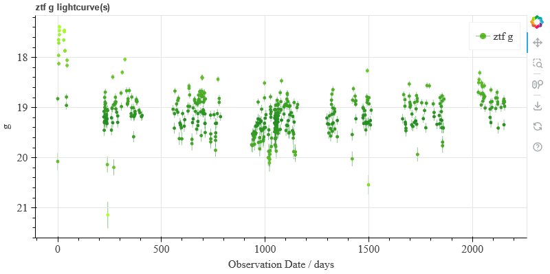
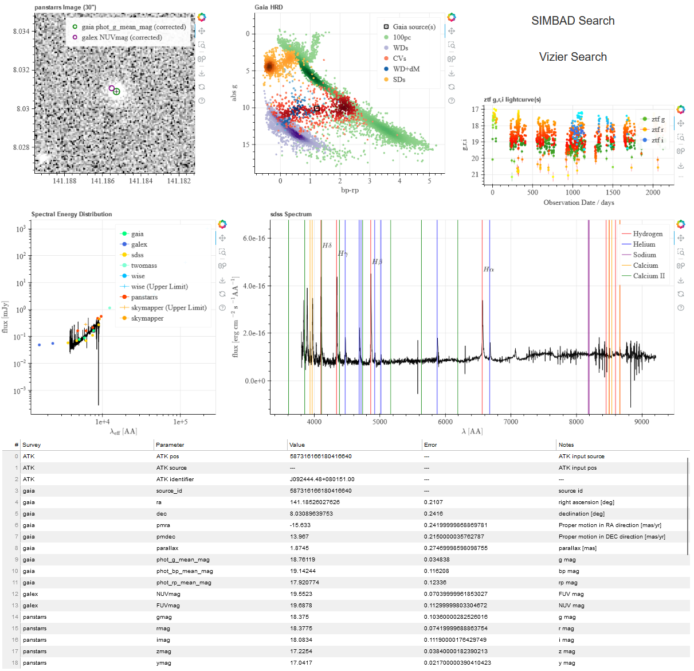

Examples
Data Queries
from AstroToolkit.Tools import query
# specify a Gaia source
source = 587316166180416640
# retrieve GALEX data, no radius is given so this will be taken from the config.
galex_data = query(kind="data", source=source, survey="galex")
# output this data to the terminal in a readable format
galex_data.showdata()
# retrieve Gaia data, this time supplying a radius - overriding the config value.
gaia_data = query(kind="data", source=source, survey="gaia", radius=5)
# grab the parallax from Gaia
parallax = gaia_data.data["parallax"][0]
# retrieve WISE photometry
wise_phot = query(kind="phot", source=source, survey="wise")
# retrieve all available photometry
bulkphot = query(kind="bulkphot", source=source)
# grab the panstarrs and skymapper photometry from bulkphot
panstarrs_phot = bulkphot.data["panstarrs"]
skymapper_phot = bulkphot.data["skymapper"]
Lightcurve Fetching and Plotting
from AstroToolkit.Tools import query
# specify a Gaia source
source = 587316166180416640
# retrieve ZTF light curve data and plot it, specifying the colours for each band.
# No radius is given, so this will be taken from the config.
figure = query(kind="lightcurve", source=source, survey="ztf").plot(
colours=["green", "red", "blue"]
)
# show the lightcurves in the browser (and save to a static .html file)
figure.showplot()

Note: This example can be loaded from within the package using:
from AstroToolkit.Examples import lightcurve
Timeseries Plotting
from AstroToolkit.Tools import query
# specify a Gaia source
source = 6050296829033196032
# retrieve ztf data for our Gaia source, plot it as a power spectrum, and then show it.
power_spectrum = (
query(kind="lightcurve", source=source, survey="ztf")
.plot(kind="powspec")
.showplot()
)
# retrieve ztf data for our Gaia source, phase fold it, and then show it.
phase_fold = (
query(kind="lightcurve", source=source, survey="ztf").plot(kind="phase").showplot()
)

Note: This example can be loaded from within the package using:
from AstroToolkit.Examples import timeseries
Image Fetching and Plotting
from AstroToolkit.Tools import query
# specify a Gaia source
source = 587316166180416640
"""
Retrieve any available image and plot it.
No size or band is given, so these will be taken from the config.
Since overlays is given as a list, only the magnitude listed for each survey in the config
will be overlayed as a detection (in this case, phot_g_mean_mag for gaia, and NUVmag for GALEX)
"""
figure = query(
kind="image", source=source, survey="any", overlays=["gaia", "galex"]
).plot()
# show the image in the browser (and save to a static .html file)
figure.showplot()
# Now, give overlays as a dict containing all magnitudes to overlay.
figure_allmags = query(
kind="image",
source=source,
survey="any",
overlays={
"gaia": ["phot_g_mean_mag", "phot_bp_mean_mag", "phot_rp_mean_mag"],
"galex": ["NUVmag", "FUVmag"],
},
).plot()
# show the image in the browser (and save to a static .html file)
figure_allmags.showplot()
"""
Now, include a light curve survey as an overlay. For surveys with enough positional
precision, this can be used to trace the motion of the object through time.
We have also specified an image size, which will override the value in the config.
A different gaia source with a large proper motion has been used.
"""
figure_tracer = query(
kind="image",
source=2552928187080872832,
survey="panstarrs",
overlays=["crts"],
size=60,
).plot()
figure_tracer.showplot()

Note: This example can be loaded from within the package using:
from AstroToolkit.Examples import image
Spectrum Fetching and Plotting
from AstroToolkit.Tools import query
# specify a Gaia source
source = 587316166180416640
# retrieve an SDSS spectrum for the gaia source, plot it and then show it.
# As no radius is given, this will be taken from the config.
spectrum = query(kind="spectrum", source=source, survey="sdss").plot().showplot()

Note: This example can be loaded from within the package using:
from AstroToolkit.Examples import spectrum
SED Fetching and Plotting
from AstroToolkit.Tools import query
# specify a Gaia source
source = 587316166180416640
# retrieve and plot an sed, with an overlayed SDSS spectrum.
sed = query(kind="sed", source=source).plot(spectrum_overlay=True, survey="sdss")
# show the figure in the browser (and save to a static .html file)
sed.showplot()

Note: This example can be loaded from within the package using:
from AstroToolkit.Examples import sed
HRD Fetching and Plotting
from AstroToolkit.Tools import query
# specify a Gaia source
source1 = 587316166180416640
# Specify a second Gaia source. This is not necessary - any number of sources can be overlayed.
source2 = 6050296829033196032
# retrieve Gaia hrd data for our list of sources, plot it and then show it.
hrd = query(kind="hrd", sources=[source1, source2]).plot().showplot()

Note: This example can be loaded from within the package using:
from AstroToolkit.Examples import hrd
Local Files Saving and Reading
from AstroToolkit.Tools import query, readdata
# specify a Gaia source
source = 587316166180416640
# retrieve ZTF light curve data for our source and save this structure to a local file
filename = query(kind="lightcurve", source=source, survey="ztf").savedata()
# recreate the original data structure from the local file
recreated_data = readdata(filename)
# plot only the g band of this data in the colour green, and show it.
recreated_data.plot(colours=["green"], bands=["g"]).showplot()

Note: This example can be loaded from within the package using:
from AstroToolkit.Examples import localfiles
Datapage Creation
from bokeh.layouts import column, layout, row
from bokeh.plotting import output_file, show
from AstroToolkit.Datapages import buttons, datatable, gridsetup
from AstroToolkit.Tools import query
# source = Hu Leo
source = 587316166180416640
# set grid size (scales size of datapage)
grid_size = 250
# get image data and plot it
image = query(
kind="image", survey="any", source=source, overlays=["gaia", "galex"]
).plot()
# get hrd data and plot it
hrd = query(kind="hrd", sources=source).plot()
# get sed data and plot it
sed = query(kind="sed", source=source).plot(spectrum_overlay=True, survey="sdss")
# get spectrum data and plot it
spectrum = query(kind="spectrum", survey="sdss", source=source).plot()
# get lightcurve data [g,r,i] and plot it
lightcurves = query(kind="lightcurve", survey="ztf", source=source).plot(
colours=["green", "red", "blue"]
)
# get SIMBAD and Vizier buttons
buttons = buttons(source=source, grid_size=grid_size)
# get a metadata table with default parameters for various surveys
metadata = datatable(
source=source,
selection={
"gaia": "default",
"galex": "default",
"panstarrs": "default",
"skymapper": "default",
"sdss": "default",
"wise": "default",
"twomass": "default",
},
)
# formats plots for use in grid
grid_plots = gridsetup(
dimensions={"width": 6, "height": 6},
plots=[
{"name": "image", "figure": image, "width": 2, "height": 2},
{"name": "hrd", "figure": hrd, "width": 2, "height": 2},
{"name": "sed", "figure": sed, "width": 2, "height": 2},
{"name": "lightcurves", "figure": lightcurves, "width": 2, "height": 1},
{"name": "buttons", "figure": buttons, "width": 2, "height": 1},
{"name": "spectrum", "figure": spectrum, "width": 4, "height": 2},
{"name": "metadata_table", "figure": metadata, "width": 6, "height": 2},
],
grid_size=grid_size,
)
# set up the final grid
datapage = layout(
column(
row(
grid_plots["image"],
grid_plots["hrd"],
column(grid_plots["buttons"], grid_plots["lightcurves"]),
),
row(grid_plots["sed"], grid_plots["spectrum"]),
row(grid_plots["metadata_table"]),
)
)
# give output file a name
output_file(f"{source}_datapage.html")
# show the datapage (also saves it)
show(datapage)

Note: This example can be loaded from within the package using:
from AstroToolkit.Examples import datapage
PyAOV Time Series Analysis
from AstroToolkit.Tools import query, tsanalysis
# perform PyAOV time series analysis on a light curve data structure
tsanalysis(query(kind="lightcurve", source=6050296829033196032, survey="ztf"))
Note: This example can be loaded from within the package using:
from AstroToolkit.Examples import pyaov